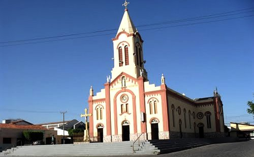

Informações técnicas sobre relevo, população, IDH etc.
| INFORMAÇÕES | |
|---|---|
| Municípios limítrofes | Milagres, Brejo Santo e Monte Horebe |
| Fundação | 27 de agosto de 1890 |
| Área total | 1 111,56 km² |
| Clima | tropical quente semiárido |
| IDH | 0,605 — médio |
| PIB | R$ 205,236,00 mil |
| INFORMAÇÕES TERRITORIAIS | |
|---|---|
| Número de habitantes | 47 962 habitantes |
| Superfície de Mauriti |
107 896 hectares
1078,96 km² (416,59 sq mi) |
| Densidade populacional | 44,5 ha./km² |
| Altitude de Mauriti | 356 metros de altitude |
| Coordenadas geográficas decimais |
Latitude:
-7.39529
Longitude: -38.7699 |
| Coordenadas geográficas sexagesimais | Latitude: 7° 23' 43'' Sul , Longitude: 38° 46' 12'' Oeste |
| INFORMAÇÕES DO MUNICÍPIO | |
|---|---|
| Endereço da Prefeitura Municipal de Mauriti |
Mauriti
Prefeitura de Mauriti
Rua Otávio Pimento de Sousa, s/nRua Otávio Pimento de Sousa, s/n Mauriti - CE, 63210-000 Brasil Work +55 (88) 3552-1300 Fax +55 (88) 3552-1477 |
| Telefone da prefeitura |
(88) 3552-1300
Internacional: +55 88 3552-1300 |
| Fax |
(88) 3552-1477
Internacional: +55 88 3552-1477 |
| Endereço electrónicoda prefeitura |
A carregar...
|
| Site oficial do município | mauriti.ce.gov.br |
| INFORMAÇÕES DO ADMINISTRATIVAS | ||
|---|---|---|
| Prefeito de Mauriti | ISAAC GOMES DA SILVA JUNIOR | |
| Partido politico | PT | |
| INFORMAÇÕES DE TRANSPORTE | |
|---|---|
| Transporte urbano disponível | |
| Aeroporto |
Aeroporto Regional do Cariri
58.6 km
Aeroporto de Paulo Afonso
230.5 km
Aeroporto Dix-Sept Rosado
289.5 km
|
| INFORMAÇÕES DE DISTÂNCIA A OUTRAS CIDADES | ||
|---|---|---|
| São Paulo : 1985 km | Rio de Janeiro : 1791 km | Brasília : 1366 km |
| Salvador : 621 km | Fortaleza : 410 km mais perto | Belo Horizonte : 1492 km |
| Manaus : 2403 km | Curitiba : 2297 km | Recife : 435 km |
| Goiânia : 1539 km | Belém : 1266 km | Porto Alegre : 2836 km |
| Guarulhos : 1963 km | Campinas : 1941 km | São Luís : 819 km |
| Distância calculada em linha reta! | ||
Conheça mais sobre a história da Mauriti.
Conta-se que no século XVII chegaram na região os índios das tribos Tapuias, Tupiniquins e mais tarde os
Guaneces. Em seguida chegaram os portugueses e se instalaram às margens da lagoa do Quichese (nome de origem
Tapuia). A referida lagoa, segundo pesquisas, marca o início da história de Mauriti, somado aos traços e
símbolos na pedra da letra, traduzidos por Dr. Paulo Menescal e José Silcon do Coité.
A 23 de outubro de 1706 a lagoa foi concedida em sesmaria (lote de terra cedida para cultivo), pelo
capitão-mor Gabriel da Silva Lago, a Rodrigo Lago, Cel. João de Barros Braga, Capitão Antonio Pereira da Cunha
e outros. Mais tarde, a lagoa foi chamada de MURITI, depois BURITI (termo indígena que denominava uma palmeira
humburity, classificada como Maurititia Vinífera; BURITI – Relativo à tribo dos Buritis pertencentes aos
Tapuias).
O Cel. João Mendes Barros adquirindo seus direitos e de seus companheiros, por volta de 1720, vendeu o sítio
aos Mendes Lobatos e Lira. Conta-se que José Lobato do Espírito Santo comprara a João de Barros Braga às
margens do riacho dos porcos e lá morou.
Em 20 de outubro de 1734 as terras foram desmembradas em sítios distintos. Muriti Grande e Muritizinho vão
foram vendidas entre os que aqui habitavam. João Mendes Lobato Lira, por todos os seus, vende os sítios a
Batorlomeu Pereira Dantas. Anos mais tarde o Sr.Bartolomeu vendeu a metade do sítio Muriti Grande a Antonio
Pereira da Cunha.
Ao longo dos anos, e por sucessões hereditárias o Capitão Miguel Gonçalves Dantas torna-se herdeiro do sítio
Buriti Grande.
O Capitão Miguelzinho, assim conhecido, era casado com Ana Cordulina Cartaxo Dantas, irmã de Dr. Joaquim do
Couto Cartaxo. Tendo sido acometido de cólera, o Capitão fez um voto a Imaculada Conceição em favor de sua
cura. Ouvida suas preces e da esposa, curou-se do mal que lhe afligia, e em honra ao voto, doou em 6 de
setembro de 1870 o chão para construção da capela que dava origem a toda história, que se inicia como povoado
Buriti Grande, tornando-o o fundador de Mauriti.
Em 27 de maio de 1875 a capela foi inaugurada e na ocasião foi batizada sua filha Carolina e mais tarde seis
crianças dos sítios vizinhos, no já povoado Buriti Grande.
Em 8 de dezembro de 1875, foi celebrada a primeira missa pelo Padre Mota, na grande festa da padroeira, cuja
imagem capitão Miguel Dantas trouxe de Fortaleza. O capitão porém não teve a felicidade de acompanhar o
progresso do povoado que ele criara, pois logo falecera.
Em 1887 o povoado em ascensão, prosperando nitidamente, passa a Distrito Policial. Anos depois, surge a vila
Buriti Grande traduzindo o progresso permanente na história deste povo. Antonio Joaquim do Couto Cartaxo,
cunhado do Capitão Miguel Dantas, influenciara por demais nesta evolução política, o que deu a Mauriti, a vila
como sede do município.
Em 27 de agosto de 1890, pelo Decreto Nº 51, instala-se o município.
Em 20 de setembro de 1895, por decisão da Câmara Municipal, pelo Decreto nº 257, foi suprimida a decisão de
Mauriti como município.
Em 1911, Mauriti passa a figurar no quadro da divisão administrativa do Brasil como Distrito do município de
Milagres.
Em 28 de outubro de 1924 ressurge pela segunda vez o município, pela Lei Estadual Nº 2211, instalado em 30 de
dezembro de 1924, tornando-se autônomo.
A vila passa a ser chamada Mauriti, numa homenagem ao Almirante Cordovil Mauriti, seu grande amigo que muito
contribuiu para a autonomia da povoação criada por Capitão Miguel Dantas.
Assume a prefeitura por nomeação Domingos Furtado Maranhão.
Em 23 de março de 1925 a 1ª Câmara de Vereadores, sendo eleito Teodorico de Sousa Leite para presidência e
Francisco Epitânio Leite Secretário.
Em 6 de outubro de 1928 o quadro político de Mauriti regride e perde a condição de município pelo Decreto
2634, voltando a ser distrito de Milagres.
Em 10 de fevereiro de 1934 o município de Mauriti ressurge pela Lei Estadual Nº 2634 quando era prefeito
Teodorico de Sousa Leite.
Saiba mais sobre os melhores lugares e o que fazer em Mauriti.
Igreja

Veja como chegar nos melhores pontos de Mauriti